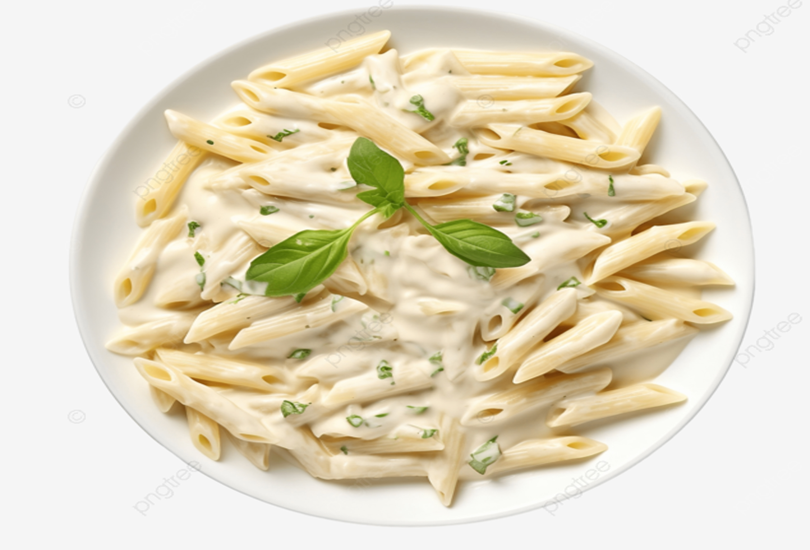
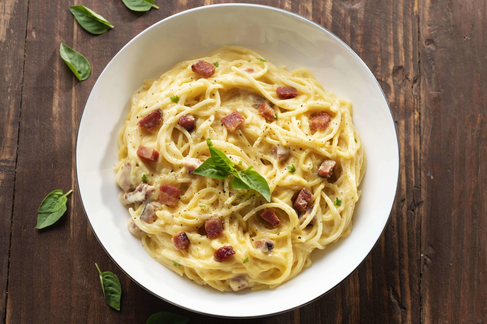
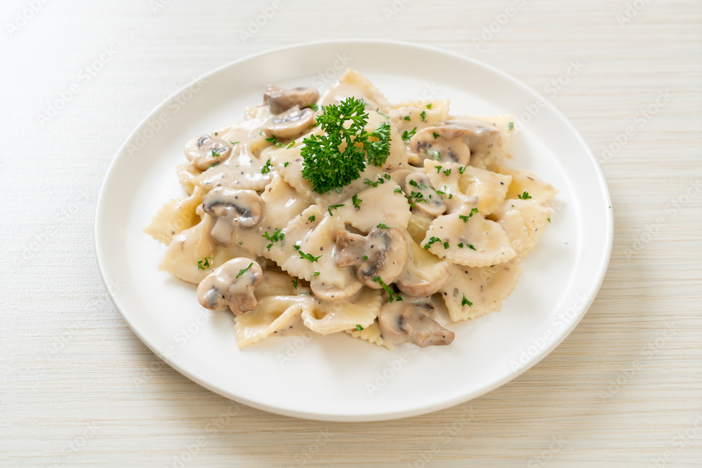
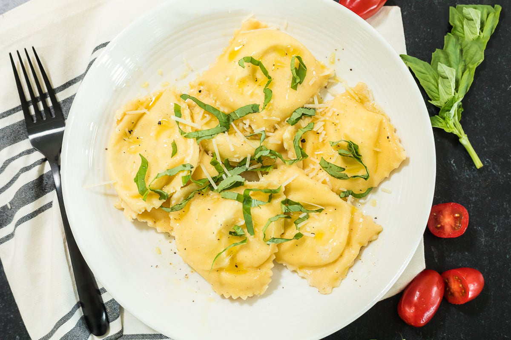
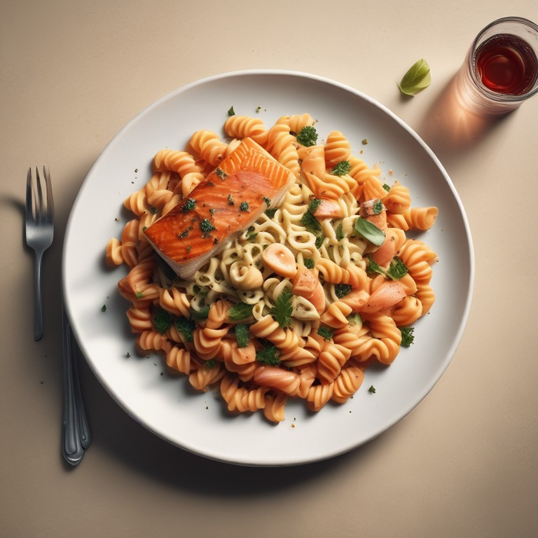
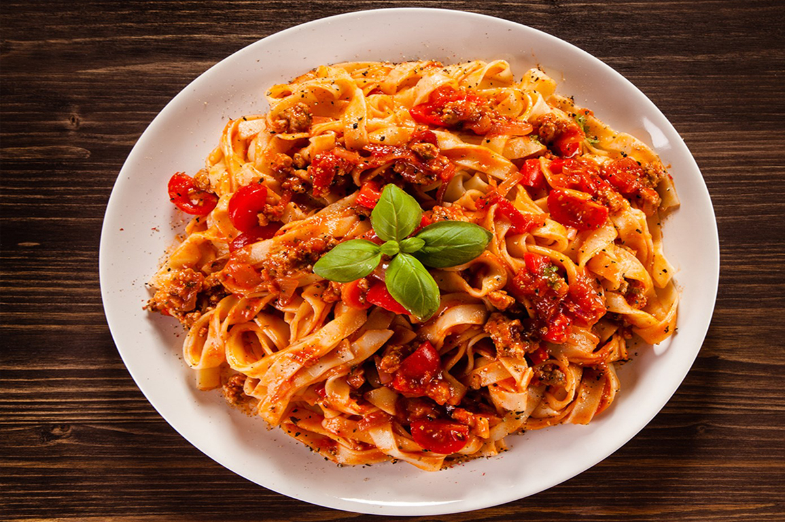
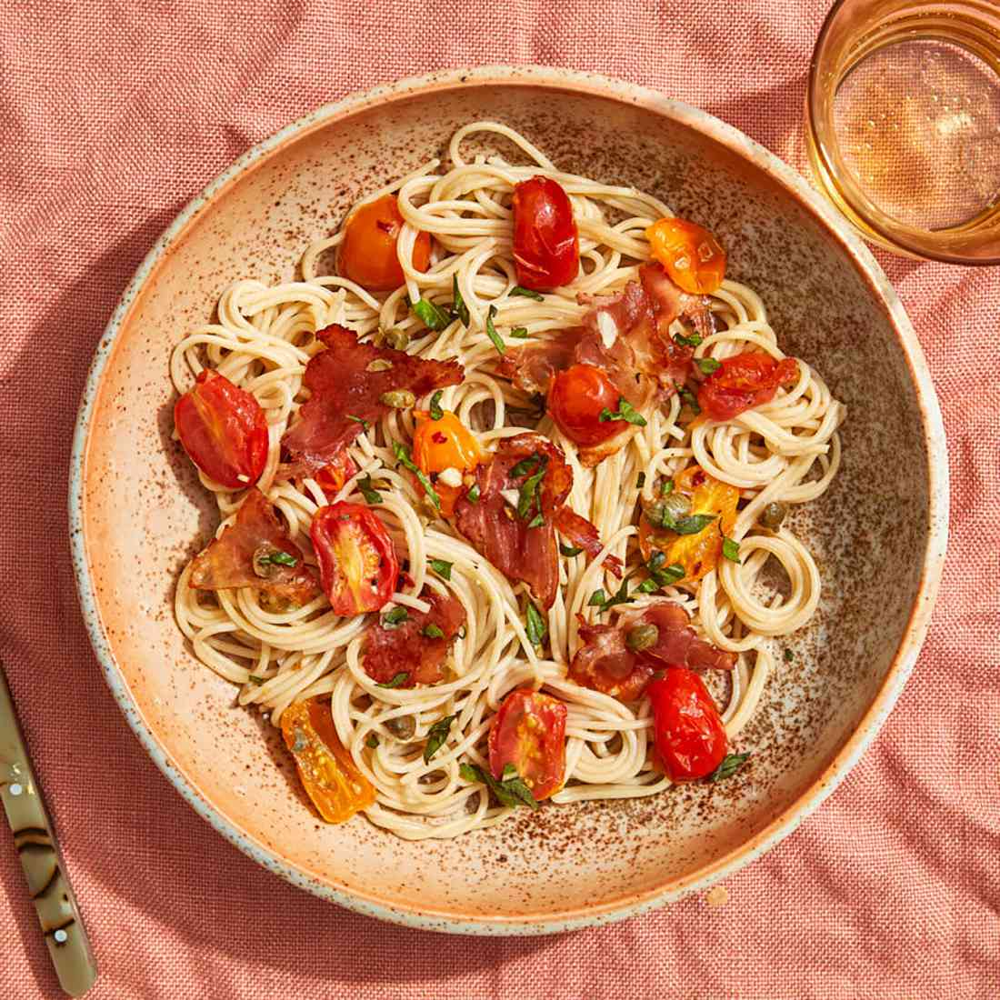
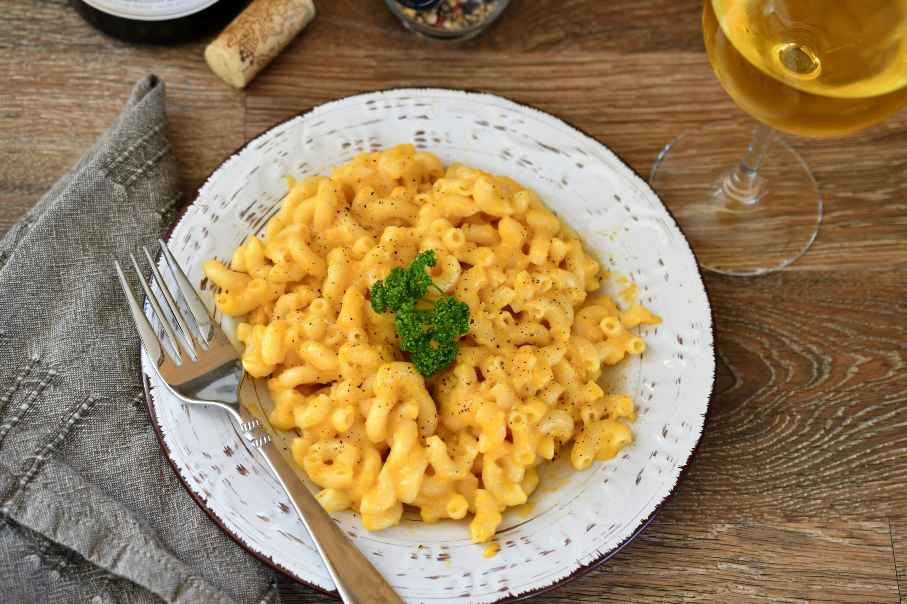

O macarrão à bolonhesa, ou "ragù alla bolognese", é um prato tradicional italiano feito com carne moída, cebola, cenoura e aipo cozidos lentamente em um molho de tomate. Geralmente servido com tagliatelle, é finalizado com queijo parmesão, resultando em um prato saboroso e reconfortante que representa a rica culinária de Bolonha. Buon appetito!
Prato para 1 PessoaR$79,00
Prato para 2 PessoaR$109,00

Macarrão Penne
O macarrão penne ao molho branco é um prato italiano cremoso e delicioso. A massa penne, com sua forma tubular, é envolvida em um molho suave feito de manteiga, farinha, leite e queijo parmesão. Com um toque de noz-moscada, é uma opção reconfortante e perfeita para qualquer ocasião. Prove este delicioso prato criado pelo nosso Vicenzo Lopes. Buon appetito!
Prato para 1 Pessoas R$65,00
Prato para 2 Pessoas R$95,00

Espaguete Carbonara
Um clássico da culinária italiana e dos pratos mais pedidos da casa o tão famoso, espaguete carbonara é uma combinação perfeita de massa al dente, pancetta crocante e um molho cremoso de gema de ovo e queijo parmesão. Temperado com pimenta-do-reino, é um prato simples, mas irresistível, que traz todo o sabor da tradição italiana à sua mesa. Buon appetito!
Prato para 1 Pessoa R$80,00
Prato para 2 Pessoas R$120,00

Farfalle da Casa
Uma deliciosa criação de Vincenzo Lopes com um grande toque especial de sua amada esposa conta com um sabor inesquecível e encantador, com um grande toque da Itália, que combina farfalle fresca com um molho branco cremoso, realçado por queijo parmesão e ervas aromáticas. Este prato traz o aconchego da cozinha caseira, perfeito para saborear momentos especiais. Buon appetito!
Prato para 1 Pessoa R$75,00
Prato Para 2 Pessoas R$109,00

Ravioli Prime
Prove a harmonia perfeita entre sabor e textura com nosso Ravioli Prime. Esses delicados raviolis são recheados com uma combinação cremosa de espinafre fresco e ricota, proporcionando um sabor suave e nutritivo. Acompanhados por ervilhas frescas. Ideal para um jantar especial ou uma refeição reconfortante, o Ravioli Prime promete encantar seu paladar e aquecer seu coração. Buon appetito!
Prato para 1 PessoaR$65,00
Prato para 2 Pessoas R$95,00

Fusilli de Salmão Grelhado
Uma combinação irresistível de fusilli al dente e suculentos pedaços de salmão grelhado, realçados por um molho leve de limão e ervas. Este prato traz uma mistura perfeita de sabores do mar e frescor, criando uma refeição deliciosa e nutritiva. Com sua textura única e o toque defumado do salmão, é uma opção ideal para quem busca um prato sofisticado e reconfortante. Buon appetito!
Prato para 1 Pessoa R$90,00
Prato para 2 PessoasR$125,00

Tagliatelle Italiana
Uma massa fresca e longa, o tagliatelle é característico da culinária italiana, com sua textura rústica que permite absorver molhos de maneira deliciosa. Feita com ovos e farinha, sua forma plana e larga a torna perfeita para acompanhamentos robustos, como ragù ou molhos cremosos. Cada garfada traz um sabor autêntico da tradição italiana, tornando-o uma escolha ideal. Buon appetito!
Prato para 1 Pessoa R$85,00
Prato para 2 Pessoas R$110,00

Capellini com Prosciutto
Uma refeição leve e cheia de sabor, o capellini é uma massa fina e delicada que combina perfeitamente com o prosciutto crocante, que adiciona um toque salgado e crocante. Os tomates grelhados, caramelizados até ficarem suculentos, trazem um frescor e um leve dulçor ao prato. Finalizado com um fio de azeite de oliva e ervas frescas. ideal para uma refeição sofisticada e saborosa. Buon appetito!
Prato para 1 Pessoa R$55,00
Prato para 2 Pessoas R$85,00

Macaroni Cheddar
O macaroni com cheddar é uma combinação irresistível de massas curtas e um molho cremoso e rico, feito com queijo cheddar derretido. A suavidade do cheddar, com seu sabor marcante, envolve cada pedaço de macaroni, criando uma experiência deliciosa e reconfortante. Este prato é perfeito para qualquer ocasião, seja como acompanhamento ou prato principal. Buon appetito!